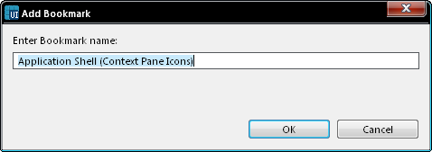

Add Bookmark
This option adds a bookmark in the theme. You will be asked to provide
a name for the bookmark, although a default name will be suggested
based on the component and screen name.

Figure: Add Bookmark
Once a bookmark has been added, it is displayed in the Bookmarks view.
For more information in using bookmarks see Using
bookmarks.